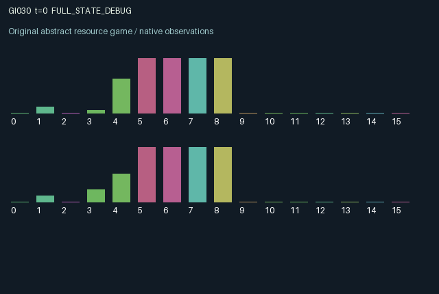

GI030 / LEGACY_ARRAY
astra-d2-00030: Shared inertial control with reversible queued pulses
2 agents5 actions16 observation columns32 original horizonRuntime: PASS
Release verification episode
Untrained uniform legal actions. Actual JAX state sampled along the full original episode; full-state debug camera. No human performance or learning claim.

Run this game
crucibles play --game 30
Start Python locally, then open the address printed by the terminal. Installation, multiplayer, takeover and keyboard controls →
Objective, rewards & ending
Exact task contract
{
"objective": "Accumulate original per-agent rewards under the interaction rules in mechanism.md.",
"natural_termination": "No early terminal; original t >= 32 horizon.",
"exact_transition_and_reward_source": "def raw_step(self, key, state, actions):\n direction = jnp.where(actions == 1, 1.0, jnp.where(actions == 2, -1.0, 0.0)).astype(jnp.float32)\n pulse = direction * jnp.minimum(state[\"charge\"], 0.45)\n brake = jnp.where(actions == 3, jnp.minimum(state[\"charge\"], 0.25), 0.0)\n flip = (actions == 4) & (state[\"charge\"] >= 0.08)\n gear = jnp.where(flip, -state[\"gear\"], state[\"gear\"])\n fired = state[\"pending\"][:, 0] * gear\n damping = 0.84 - 0.8 * jnp.sum(brake)\n velocity = jnp.clip(damping * state[\"velocity\"] + 0.35 * jnp.sum(fired), -0.35, 0.35)\n unconstrained_position = state[\"position\"] + velocity\n collision = jnp.abs(unconstrained_position) > 1.0\n position = jnp.clip(unconstrained_position, -1.0, 1.0)\n velocity = jnp.where(collision, -0.2 * velocity, velocity)\n quality = jnp.exp(-jnp.square((position - state[\"goal\"]) / state[\"width\"]))\n dwell = jnp.where(quality >= 0.5, jnp.minimum(state[\"dwell\"] + 1, 4), 0).astype(jnp.int32)\n effort = jnp.abs(pulse) + brake + 0.08 * flip.astype(jnp.float32)\n charge = jnp.clip(state[\"charge\"] - effort + 0.06 + 0.12 * (actions == 0).astype(jnp.float32), 0.0, 1.0)\n pending = jnp.stack((state[\"pending\"][:, 1], pulse), axis=1)\n rewards = 0.40 * quality + 0.35 * (dwell >= 3).astype(jnp.float32)\n rewards = rewards - 0.10 * jnp.abs(velocity) / 0.35 - 0.12 * effort - 0.05 * collision.astype(jnp.float32)\n rewards = jnp.clip(rewards, -1.0, 1.0).astype(jnp.float32)\n next_state = {\n \"t\": state[\"t\"] + jnp.array(1, dtype=jnp.int32),\n \"position\": position.astype(jnp.float32),\n \"velocity\": velocity.astype(jnp.float32),\n \"goal\": state[\"goal\"],\n \"width\": state[\"width\"],\n \"charge\": charge.astype(jnp.float32),\n \"gear\": gear.astype(jnp.float32),\n \"pending\": pending.astype(jnp.float32),\n \"dwell\": dwell,\n \"last_effort\": effort.astype(jnp.float32),\n \"last_action\": actions.astype(jnp.int32),\n }\n done_all = next_state[\"t\"] >= 32\n dones = jnp.full((2,), done_all, dtype=jnp.bool_)\n info = {\"done_all\": done_all, \"legal_mask\": self.legal_actions(next_state)}\n return self.observe(next_state), next_state, rewards, dones, info"
}Declared per-step reward bounds: -1.0 to 1.0. Observability: source_defined.
Rules
Original mechanism document (historical status wording retained)
# astra-d2-00030: Shared inertial control with reversible queued pulses This is a parentless training-context mechanism proposal based on generic delayed control and coupled-actuator ideas. It is not asserted to be a faithful physical simulation or a distinct isomorphism class. Only the assigned interface and numerical whitelist informed its implementation. ## Transition mechanism and actions Two separate actuators drive one shared scalar position and velocity. Each has a battery, a gearbox sign, and a two-slot pulse queue. Queued commands store the signed pulse before application of the gearbox. The gearbox sign used at firing time therefore determines the physical direction of an already queued pulse. Actions are 0 coast and recharge faster, 1 enqueue a positive pulse, 2 enqueue a negative pulse, 3 apply a brake, and 4 reverse one's gearbox if at least 0.08 charge is available. Positive and negative pulses consume up to 0.45 charge. Braking consumes up to 0.25 charge and reduces the shared velocity's damping multiplier; it cannot cancel the new force term directly. Reversal consumes 0.08 charge. Every step restores 0.06 charge, with another 0.12 on coast, capped at one. The current action's accepted gearbox reversal is applied before the oldest queued pulse fires. The queue's newer slot moves to its older slot, and a newly emitted pulse enters the newer slot. A pulse emitted in one transition thus fires two transitions later, with opportunities for its sign to be altered before or at firing. Battery recharge does not resize a pulse already in the queue. Shared velocity is the damped previous velocity plus the sum of the two fired forces, clipped to [-0.35, 0.35]. Position is clipped to [-1, 1]. Crossing a boundary leaves position at that boundary and reverses the proposed velocity with factor 0.2. This is a declared simplified collision rule. ## Information and delayed interaction Each role has a private, episode-fixed preferred position and width. These can favor compatible or conflicting regions. Position, velocity, charges, gears and both pulse queues are visible. A role sees its own consecutive dwell counter and the partner's previous action, but not the partner's target, width or dwell counter. The sixteen observation columns are: time/32; position; velocity/0.35; own target; own width/0.4; own and partner charge; own and partner gear; own older and newer queued pulses/0.45; partner older and newer queued pulses/0.45; own dwell/4; partner previous action/4; own previous charge expenditure/0.45. Both agents affect the same persistent velocity and position and thereby both agents' future target quality. The queue, reversible conversion at firing, finite charge, inertia and dwell counters make effects persist beyond the current action. A reversal can reinterpret an existing commitment rather than merely change the direction of the next command. ## Incentives and reward bounds Own quality is exp(-((position - private target)/private width)^2). A dwell counter increments, capped at four, while quality is at least 0.5 and resets to zero otherwise. Per-step reward is 0.40 times own quality, plus 0.35 while the counter is at least three, minus 0.10 times normalized absolute velocity, 0.12 times own charge expenditure, and 0.05 for a shared boundary collision. Quality is in [0, 1], the normalized speed is at most one, and own expenditure is at most 0.45 because the actions are mutually exclusive. The expression is bounded by [-0.204, 0.75] before the additional explicit [-1, 1] clip. Dwell rewards favor holding a region, while target disagreement can make prolonged simultaneous dwell impossible for a particular episode. This geometric possibility is not a claim about trained policies or aggregate outcomes. ## Interface and evidence status The source intends A2/O16/U5, all-legal masks, 32 transitions and an unchanged terminal state observation without automatic reset. Reset uses only its supplied key for position and private targets/widths. The step key is unused because subsequent transitions are deterministic. The author has not executed the source, initialized JAX, compiled it, run the isolated validator, certified duplicate status, qualified the mechanism or measured learning. Any syntax parse is only a syntax parse. Requested model provenance is recorded separately; immutable backend revision and tokens are unobservable.
Commands
0Coast and recharge
1Queue positive impulse
2Queue negative impulse
3Brake
4Flip gear
Roles & abilities
agent_0 Original legacy agent; see mechanism and source
agent_1 Original legacy agent; see mechanism and source
Observation permissions
Training receives only the original observation rows. Role cameras use declared visibility; debug cameras are explicitly marked. Local benchmark records log debug exposure and role takeover history.
Exact observation layout
[
{
"slice": [
0,
16
],
"visibility": "exact original observe() below",
"source_code": "def observe(self, state):\n obs = jnp.zeros((2, 16), dtype=jnp.float32)\n obs = obs.at[:, 0].set(state[\"t\"] / 32.0)\n obs = obs.at[:, 1].set(state[\"position\"])\n obs = obs.at[:, 2].set(state[\"velocity\"] / 0.35)\n obs = obs.at[:, 3].set(state[\"goal\"])\n obs = obs.at[:, 4].set(state[\"width\"] / 0.4)\n obs = obs.at[:, 5].set(state[\"charge\"])\n obs = obs.at[:, 6].set(jnp.roll(state[\"charge\"], 1))\n obs = obs.at[:, 7].set(state[\"gear\"])\n obs = obs.at[:, 8].set(jnp.roll(state[\"gear\"], 1))\n obs = obs.at[:, 9].set(state[\"pending\"][:, 0] / 0.45)\n obs = obs.at[:, 10].set(state[\"pending\"][:, 1] / 0.45)\n obs = obs.at[:, 11].set(jnp.roll(state[\"pending\"][:, 0], 1) / 0.45)\n obs = obs.at[:, 12].set(jnp.roll(state[\"pending\"][:, 1], 1) / 0.45)\n obs = obs.at[:, 13].set(state[\"dwell\"] / 4.0)\n obs = obs.at[:, 14].set(jnp.roll(state[\"last_action\"], 1) / 4.0)\n obs = obs.at[:, 15].set(state[\"last_effort\"] / 0.45)\n return obs"
}
]Entity visibility & attributes
[]
Actual verification & provenance
Per-game execution receipt
{
"game": "gi030",
"status": "PASS",
"verification_revision": 2,
"source_sha256": "69a7e090711c1b1cd244923b6abea3acb66b825fe8a4a6835a2f9bf3f307621b",
"seed": 20261101,
"runtime": {
"jax": "0.4.38",
"numpy": "1.26.4",
"devices": [
"TFRT_CPU_0"
]
},
"dimensions": {
"num_agents": 2,
"observation_size": 16,
"num_actions": 5,
"max_steps": 32
},
"checks": {
"eager_reset": {
"status": "PASS",
"seconds": 0.5723562240600586
},
"observation_spaces_legal_masks": {
"status": "PASS",
"seconds": 0.15118885040283203
},
"eager_step": {
"status": "PASS",
"seconds": 0.8130574226379395
},
"jit_reset": {
"status": "PASS",
"seconds": 0.2708930969238281
},
"jit_step": {
"status": "PASS",
"seconds": 0.2553095817565918
},
"eager_jit_integer_parity_float_measurement": {
"status": "PASS",
"seconds": 0.0010390281677246094
},
"jit_vmap_reset": {
"status": "PASS",
"seconds": 0.4025702476501465
},
"jit_vmap_step": {
"status": "PASS",
"seconds": 0.3286762237548828
},
"outer_autoreset_api": {
"status": "PASS",
"seconds": 0.8209631443023682
},
"full_original_horizon_episode_and_render": {
"status": "PASS",
"seconds": 1.1582882404327393
}
},
"human_scores": null,
"browser_controls": "PENDING",
"failures": [],
"elapsed_seconds": 5.321147680282593,
"float_parity_max_abs": 5.960464477539063e-08,
"numerical_parity": "UNDETERMINED_NONZERO_FLOAT_DIFFERENCE",
"raw_terminal_absorbing": "NOT_PART_OF_ORIGINAL_LEGACY_CONTRACT",
"terminal_outer_reset": "PASS",
"episode_steps": 32,
"scripted_random_returns": [
-0.38934385124593973,
-0.9882043523612083
],
"terminal": true,
"demo_information": "FULL_STATE_DEBUG",
"demo_frames": 33,
"render_roles_checked": 2
}Chromium control verification
{
"game": "gi030",
"status": "PASS",
"human_scores": null,
"engineering": true,
"checks": [
"catalog_selected_and_real_native_reset",
"dom_queue_and_native_step",
"second_participant_ownership_and_native_joint_step",
"all_roles_individually_controllable_no_role_cap",
"explicit_debug_camera",
"release_to_pure_ai_without_reset"
],
"ui_sha256": "15b5861d23b3c42811865c954d5a988280bbfd21cf8e93754be2437a027158c5",
"seconds": 3.9503633975982666
}Original identity and file hashes
{
"id": 30,
"key": "gi030",
"title": "astra-d2-00030: Shared inertial control with reversible queued pulses",
"summary": "",
"tags": [],
"family": "legacy_array",
"dimensions": {
"num_agents": 2,
"observation_size": 16,
"num_actions": 5,
"max_steps": 32
},
"source_sha256": "69a7e090711c1b1cd244923b6abea3acb66b825fe8a4a6835a2f9bf3f307621b",
"manifest_sha256": "a5646ab10685940c374e79cc458dd02321ccac4dd37dd1a5401b73cf80999b15",
"files": [
{
"file": "candidate.py",
"sha256": "69a7e090711c1b1cd244923b6abea3acb66b825fe8a4a6835a2f9bf3f307621b",
"bytes": 4549,
"origin": "work/exp_2/astra_generation/discovery_v2/initial/candidate_00030/attempt_00/candidate.py"
},
{
"file": "mechanism.md",
"sha256": "f3bd4071a812918e4832603c60b96c5ae122ea212e9ab12e7f780e612d24effb",
"bytes": 4421,
"origin": "work/exp_2/astra_generation/discovery_v2/initial/candidate_00030/attempt_00/mechanism.md"
}
],
"original_status": "LEGACY_SOURCE",
"original_saved_replay": false,
"release_validation": "PASS",
"human_scores": null,
"browser_validation": "PASS"
}